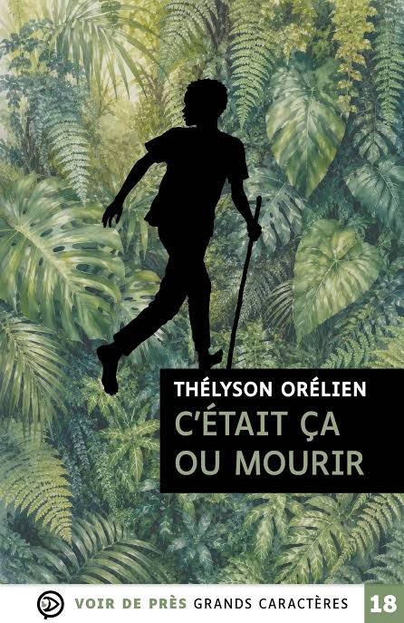

Ces repères valent pour tous vos travaux évalués. Votre établissement ou vos formateurs peuvent les préciser ou les restreindre : lisez toujours la consigne.
RÉGION ACADÉMIQUE LA RÉUNION – DRAFPICIA : éthique et usages responsables25 / 91
Cadre éthique et responsable
Cinq principes structurants
1
Responsabilité
Vous êtes le seul auteur de ce que vous rendez.
2
Transparence
L’usage de l’IA ne se cache pas : il se déclare.
3
Intégrité et véracité
Vous vérifiez les faits et les sources.
4
Effort personnel
L’outil assiste, il ne réfléchit pas à votre place.
5
Sobriété numérique
Un usage utile, ciblé, limité.
RÉGION ACADÉMIQUE LA RÉUNION – DRAFPICIA : éthique et usages responsables26 / 91
Cinq principes · cadre éthique et responsable
Principe 1 · Responsabilité
Vous êtes le seul auteur
L’IA n’est ni une personne juridique ni une personne académique : elle ne peut pas être co-autrice.
Vous répondez seul du contenu, de la rigueur et de la portée de ce que vous rendez.
« L’IA me l’a écrit » n’est jamais une excuse
RÉGION ACADÉMIQUE LA RÉUNION – DRAFPICIA : éthique et usages responsables27 / 91
Principe 1 · 8 min
Délégation à l’IA ou responsabilité humaine ?
1
Corriger l’orthographe de mon mémoire
2
Proposer des mots-clés de recherche
3
Interpréter une image d’examen
4
Choisir les paramètres d’acquisition
5
Rédiger la discussion de mon mémoire
6
Trier des articles par pertinence
Question clé : qui est responsable en cas d’erreur ?
Cochez ce que vous délégueriez à l’IA
RÉGION ACADÉMIQUE LA RÉUNION – DRAFPICIA : éthique et usages responsables28 / 91
Cinq principes · cadre éthique et responsable
Principe 2 · Loyauté
Transparence
L’usage de l’IA ne se cache pas.
Déclarer la contribution d’un outil, c’est être loyal envers vos évaluateurs et préserver la valeur du diplôme.
Déclarer = une obligation
RÉGION ACADÉMIQUE LA RÉUNION – DRAFPICIA : éthique et usages responsables29 / 91
Principe 2 · actualité IA Act
Transparence : dire quand l’IA a servi
Dans vos travaux
Déclarer chaque usage : outil, finalité, type de traitement
Par pictogramme, annexe ou note de bas de page selon l’institut
Ne rien dissimuler : c’est la loyauté envers vos évaluateurs
Dans la société (IA Act, art. 50)
Depuis le 2 août 2026 : un chatbot doit dire qu’il est une IA
Les « deepfakes » (image, son, vidéo) doivent être signalés
Un texte généré pour informer le public doit l’indiquer, sauf relecture humaine avec responsabilité éditoriale
Les fournisseurs doivent marquer techniquement les contenus générés
RÉGION ACADÉMIQUE LA RÉUNION – DRAFPICIA : éthique et usages responsables30 / 91
Principe 2 · quiz à points · 5 min
Humain ou IA ? Saurez-vous faire la différence ?
A
[Extrait A à compléter : 5 lignes sur un sujet d’imagerie]
B
[Extrait B à compléter : 5 lignes sur un sujet d’imagerie]
C
[Extrait C à compléter : 5 lignes sur un sujet d’imagerie]
Pour chaque extrait : écrit par un humain ou généré par une IA ? Réponse rapide = plus de points.
RÉGION ACADÉMIQUE LA RÉUNION – DRAFPICIA : éthique et usages responsables31 / 91
Cinq principes · cadre éthique et responsable
Principe 3 · Vérification
Intégrité et véracité
L’IA se trompe, invente des faits et des références.
Vous vérifiez systématiquement l’exactitude des données et l’existence réelle des sources qu’elle propose.
Vérifier chaque faitOuvrir chaque source
RÉGION ACADÉMIQUE LA RÉUNION – DRAFPICIA : éthique et usages responsables35 / 91
Principe 3 · actualité · 6 min
L’affaire Thélyson Orélien
Sept. 2026Son roman « C’était ça ou mourir » reçoit le Prix du Roman Fnac. Un compte anonyme sur X l’accuse, résultats d’un détecteur d’IA (Pangram) à l’appui.
Automne 2026L’auteur et son éditeur démentent. Le roman est retiré de la sélection du Goncourt.
21 oct. 2026Son éditeur canadien, Boréal, annonce avoir trouvé des traces d’IA dans les métadonnées de documents de travail et cesse de le publier.
Aujourd’huiL’auteur dit avoir utilisé l’IA pour ses recherches historiques, mais affirme avoir écrit le livre lui-même. L’affaire reste contestée.

Sources : franceinfo, ActuaLitté (septembre – novembre 2026)
RÉGION ACADÉMIQUE LA RÉUNION – DRAFPICIA : éthique et usages responsables36 / 91
Principe 3 · 5 min
Ce que l’affaire nous apprend pour vos travaux
Un détecteur ne prouve rien seul
Il donne une probabilité. Il faut un faisceau d’indices : versions, métadonnées, entretien.
Déclarer vous protège
Un usage déclaré et autorisé ne peut pas vous être reproché.
La confiance se perd vite
Un prix, un éditeur, une réputation : tout peut tomber en quelques semaines.
Un détecteur annonce « 30 % de texte généré par IA » dans un mémoire. Suffisant pour sanctionner ?
Oui · Non · Ça dépend
RÉGION ACADÉMIQUE LA RÉUNION – DRAFPICIA : éthique et usages responsables37 / 91
Cinq principes · cadre éthique et responsable
Principe 4 · Valeur pédagogique
Effort personnel
L’outil reste une assistance ponctuelle : chercher des mots-clés, structurer, corriger l’orthographe.
Il ne remplace jamais la réflexion critique, l’analyse et la problématisation, qui sont le cœur de votre formation.
RéfléchirAnalyserProblématiser : c’est vous
RÉGION ACADÉMIQUE LA RÉUNION – DRAFPICIA : éthique et usages responsables38 / 91
Principe 4 · la règle d’or
La règle par défaut
Interdit
Sans autorisation explicite
Consigne, modalités d’évaluation… Sans autorisation, l’IA générative est interdite pour produire, analyser, structurer, reformuler ou illustrer un travail remis.
Possible, déclaré
Avec autorisation
Usage possible comme aide, à partir de votre propre travail initial, et toujours déclaré.
En cas de doute : demander au formateur avant, pas après. L’autorisation est donnée travail par travail.
RÉGION ACADÉMIQUE LA RÉUNION – DRAFPICIA : éthique et usages responsables39 / 91
Principe 4 · effort personnel
Effort personnel : ce qui est permis
Par défaut : interdit. Autorisé seulement si l’enseignant l’a prévu, à partir de votre travail, et toujours déclaré.
Possible, avec accord et déclaration
Corriger l’orthographe d’un texte que vous avez écrit
Chercher des mots-clés, des pistes bibliographiques (à vérifier)
RÉGION ACADÉMIQUE LA RÉUNION – DRAFPICIA : éthique et usages responsables53 / 91
Bonus sobriété · le prix de l’IA
ChatGPT : 20 $ depuis 2023… et demain ?
ChatGPT Plus (prix réel)Plan interne OpenAIAu rythme de Netflix
La hausse a déjà commencé
Pas par le prix de base, mais par de nouveaux paliers, la publicité et les quotas :
Goavec publicité7,99 €
Plusinchangé depuis 202322,99 €
Proavril 2026≈ 103 €
Pro 500septembre 2026500 $
Prix France TTC, oct. 2026. Sources : JeChange, iPhoneSoft, Siècle Digital ; New York Times (27 sept. 2024) via The Decoder ; Financial Times via TechSpot.
RÉGION ACADÉMIQUE LA RÉUNION – DRAFPICIA : éthique et usages responsables54 / 91
Bonus sobriété · le prix de l’IA
Ce que coûte vraiment l’IA
50–60 Md$
un datacenter IA d’un gigawatt
Jensen Huang, PDG de Nvidia
30–50 Md€
le campus IA d’1 GW annoncé en France
Sommet IA, février 2025
25–40 000 $
une seule puce Nvidia (H100, Blackwell)
estimations d’analystes et de Nvidia
OpenAI en 2025
Revenus13 Md$
Coûts34 Md$
Comptes vérifiés par le Financial Times
≈ 700 $
de calcul pour un abonnement Plus à 20 $ utilisé au maximum
SemiAnalysis, juin 2026 · Pro : ≈ 14 000 $
20 → 44 $
le prix que visait OpenAI pour Plus en 2029
documents internes, New York Times, 2024
« Nous perdons de l’argent sur les abonnements Pro : les gens s’en servent bien plus que prévu. » — Sam Altman, PDG d’OpenAI, janvier 2025
RÉGION ACADÉMIQUE LA RÉUNION – DRAFPICIA : éthique et usages responsables55 / 91
RÉGION ACADÉMIQUE LA RÉUNION – DRAFPIC
03
Partie 3
Secret professionnel et données
Futurs professionnels de santé, vous êtes déjà tenus au secret professionnel en stage. Une violation de cette règle est un manquement grave, avec des suites disciplinaires.
RÉGION ACADÉMIQUE LA RÉUNION – DRAFPICIA : éthique et usages responsables57 / 91
Rappel · vos réponses du début
Avez-vous déjà copié dans une IA… ?
Résultats anonymes de tout à l’heure
RÉGION ACADÉMIQUE LA RÉUNION – DRAFPICIA : éthique et usages responsables58 / 91
Secret professionnel
En imagerie, une image n’est jamais « juste une image »
Ce que contient un examen
Les métadonnées DICOM : nom, date de naissance, identifiant, date et lieu de l’examen
Parfois des informations incrustées dans l’image
Un compte rendu, un contexte clinique
« Anonymisé » ne suffit pas
Une pathologie rare, un service, une date peuvent suffire à reconnaître quelqu’un
Le cadre interdit ces données même anonymisées ou modifiées
Il interdit aussi de reconnaître un service, une équipe ou un établissement
Toute violation engage votre responsabilité disciplinaire : c’est un manquement au secret professionnel.
RÉGION ACADÉMIQUE LA RÉUNION – DRAFPICIA : éthique et usages responsables59 / 91
Secret professionnel · repère pratique
Le feu tricolore de vos données
Possible
Si l’IA est autorisée
Des exemples entièrement fictifs
Vos propres notes, sans données de stage
Une question de cours générale
Seulement avec autorisation
De l’auteur ou de l’institut
Un support de cours, un diaporama
Un article fourni par l’institut
Une consigne de travail
Jamais
Même anonymisé
Une image, un compte rendu, un dossier patient
Une situation ou un verbatim de stage
Un sujet d’évaluation ou un corrigé
RÉGION ACADÉMIQUE LA RÉUNION – DRAFPICIA : éthique et usages responsables60 / 91
Secret professionnel · quiz à points · situation 1/4
Vert, orange ou rouge ?
Je donne à une IA… Une capture d’écran de console, sans nom visible, pour comprendre un paramètre.
A · 🟢 Vert · possibleB · 🟠 Orange · avec autorisationC · 🔴 Rouge · jamais
Votez sur votre téléphone 20 secondes dès l’ouverture du vote
RÉGION ACADÉMIQUE LA RÉUNION – DRAFPICIA : éthique et usages responsables61 / 91
Secret professionnel · quiz à points · situation 2/4
Vert, orange ou rouge ?
Je donne à une IA… Le diaporama du cours de radioprotection, pour en faire des fiches.
A · 🟢 Vert · possibleB · 🟠 Orange · avec autorisationC · 🔴 Rouge · jamais
Votez sur votre téléphone 20 secondes dès l’ouverture du vote
RÉGION ACADÉMIQUE LA RÉUNION – DRAFPICIA : éthique et usages responsables62 / 91
Secret professionnel · quiz à points · situation 3/4
Vert, orange ou rouge ?
Je donne à une IA… Un cas inventé de toutes pièces pour réviser.
A · 🟢 Vert · possibleB · 🟠 Orange · avec autorisationC · 🔴 Rouge · jamais
Votez sur votre téléphone 20 secondes dès l’ouverture du vote
RÉGION ACADÉMIQUE LA RÉUNION – DRAFPICIA : éthique et usages responsables63 / 91
Secret professionnel · quiz à points · situation 4/4
Vert, orange ou rouge ?
Je donne à une IA… Le compte rendu d’un patient vu en stage, nom effacé.
A · 🟢 Vert · possibleB · 🟠 Orange · avec autorisationC · 🔴 Rouge · jamais
Votez sur votre téléphone 20 secondes dès l’ouverture du vote
RÉGION ACADÉMIQUE LA RÉUNION – DRAFPICIA : éthique et usages responsables64 / 91
Secret professionnel · en synthèse
Données de stage et documents de cours
Champ
Autorisé avec accord préalable et déclaration
Interdit
Données de stage & confidentialité
Aucune donnée réelle de terrain dans une IA.
Seuls des exemples entièrement fictifs, génériques et non identifiants, si l’enseignant l’autorise.
Verbatims de patients, familles, professionnels, équipes. Situations réelles de stage, cas cliniques, documents internes, même anonymisés.
Toute information permettant de reconnaître une personne, un service ou un établissement.
Supports de cours & documents pédagogiques
Vos notes personnelles, uniquement si elles ne contiennent ni données confidentielles, ni documents protégés, ni informations identifiantes.
Transmission à une IA de supports de cours, diaporamas, articles fournis, sujets, corrigés, grilles, procédures, documents institutionnels, enregistrements audio ou vidéo, sans autorisation préalable.
RÉGION ACADÉMIQUE LA RÉUNION – DRAFPICIA : éthique et usages responsables65 / 91
RÉGION ACADÉMIQUE LA RÉUNION – DRAFPIC
04
Partie 4
Déclarer, vérifier, assumer
8 min · déclarer son usage, vérifier ce que l’IA produit, connaître les contrôles
RÉGION ACADÉMIQUE LA RÉUNION – DRAFPICIA : éthique et usages responsables66 / 91
Déclarer
Comment déclarer votre usage de l’IA ?
1
Le nom de l’outil
ex. ChatGPT, Mistral, Copilot…
2
La finalité d’usage
ex. préparer la revue de littérature, structurer un plan
3
Le type de traitement
ex. mots-clés, correction orthographique, schéma
Exemple de déclaration
Outil : [nom de l’outil et version] Finalité : recherche de mots-clés pour ma revue de littérature Traitement : liste de 15 mots-clés proposée par l’outil, vérifiée et complétée par moi ; aucune donnée de stage saisie Autorisation : consigne du module [X] du [date]
Où ?
Chaque institut fixe la forme : pictogramme, annexe détaillée ou note de bas de page. L’essentiel : clairement, dans le document rendu.
RÉGION ACADÉMIQUE LA RÉUNION – DRAFPICIA : éthique et usages responsables67 / 91
Contrôler
Contrôles et sanctions
1 indice
un détecteur signale, il ne prouve pas
1 entretien
pour expliquer et défendre votre travail
0
sanction automatique sans vérification
Les contrôles
Logiciels anti-plagiat et détecteurs d’IA (ex. Compilatio) ; au-delà d’un seuil fixé par l’établissement, vérification
Entretien d’authenticité : oral, soutenance ou production complémentaire
Les conséquences possibles
Travail, mémoire ou soutenance non validés
Ajournement de la certification
Saisine de l’instance disciplinaire
RÉGION ACADÉMIQUE LA RÉUNION – DRAFPICIA : éthique et usages responsables68 / 91
Clôture · quiz à points · 7 min
Quiz final : à vos téléphones !
8
questions
20 s
par question
1
podium
Les points s’additionnent
Les points des quiz précédents comptent aussi. Bonne réponse + rapidité = plus de points.
Sur vos téléphones
8 questions sur les cinq principes, le secret professionnel et les contrôles.
RÉGION ACADÉMIQUE LA RÉUNION – DRAFPICIA : éthique et usages responsables69 / 91
Bravo à tous
Le podium
Podium
RÉGION ACADÉMIQUE LA RÉUNION – DRAFPICIA : éthique et usages responsables78 / 91
Synthèse
Trois messages à retenir
1
Par défaut, l’IA est interdite dans vos travaux évalués. Si elle est autorisée : à partir de votre travail, et toujours déclarée.
2
Aucune donnée de stage ou de patient dans une IA, même anonymisée.
3
Vous restez l’auteur et le responsable : vérifiez tout, gardez vos brouillons.
L’IA pour tous… mais pas pour tout.
RÉGION ACADÉMIQUE LA RÉUNION – DRAFPICIA : éthique et usages responsables79 / 91
Clôture · 3 min
Votre avis compte
Deux questions, une minute
Une note de 1 à 5
Qu’est-ce qui vous sera le plus utile ?
Quelle question vous reste-t-il ?
Anonyme
Contact
Romain Ringwald romain.ringwald@ac-reunion.fr
Référent IA / pédagogique de l’institut : [à compléter]
RÉGION ACADÉMIQUE LA RÉUNION – DRAFPICIA : éthique et usages responsables80 / 91
RÉGION ACADÉMIQUE LA RÉUNION – DRAFPIC
+
Bonus débat
Éthique ou pas éthique ?
Bonus · 15 h 30 – 16 h · trois situations du monde de la santé. Vous votez, puis on débat : qui décide, qui est responsable, quelles données circulent ?
RÉGION ACADÉMIQUE LA RÉUNION – DRAFPICIA : éthique et usages responsables84 / 91
Bonus · situation 1/3
Situation 1 · Prioriser les examens
La situation
Un service d’imagerie utilise une IA qui repère les images suspectes et les place en tête de la liste de lecture. Le radiologue garde l’interprétation et la décision.
A · ÉthiqueB · Pas éthiqueC · Ça dépend
Votez, puis justifiez en une phrase
RÉGION ACADÉMIQUE LA RÉUNION – DRAFPICIA : éthique et usages responsables85 / 91
Bonus · situation 2/3
Situation 2 · « J’ai enlevé le nom »
La situation
Un étudiant colle dans un chatbot le compte rendu d’un patient rencontré en stage, nom effacé, pour l’aider à rédiger son analyse de situation.
A · ÉthiqueB · Pas éthiqueC · Ça dépend
Votez, puis justifiez en une phrase
RÉGION ACADÉMIQUE LA RÉUNION – DRAFPICIA : éthique et usages responsables87 / 91
Bonus · situation 3/3
Situation 3 · Le détecteur décide
La situation
Un institut ajourne automatiquement tout mémoire dont le détecteur d’IA dépasse 10 %, sans entretien avec l’étudiant.
A · ÉthiqueB · Pas éthiqueC · Ça dépend
Votez, puis justifiez en une phrase
RÉGION ACADÉMIQUE LA RÉUNION – DRAFPICIA : éthique et usages responsables89 / 91